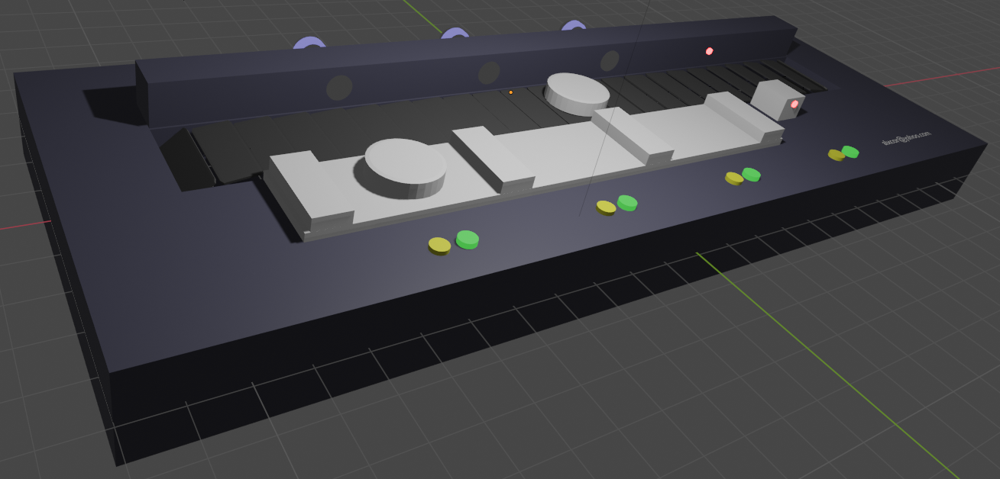
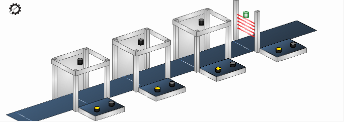
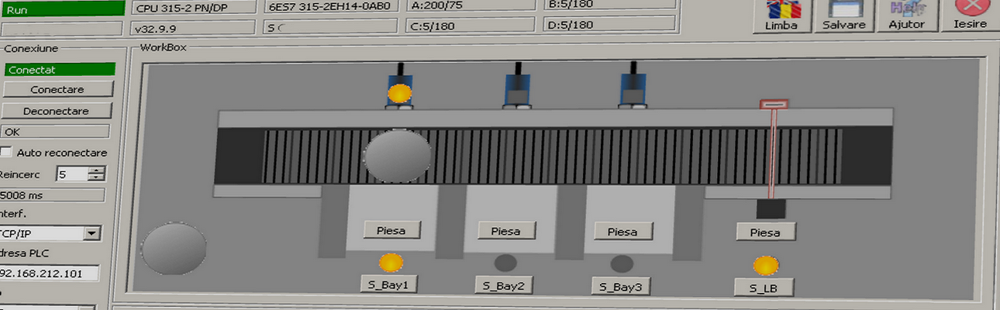
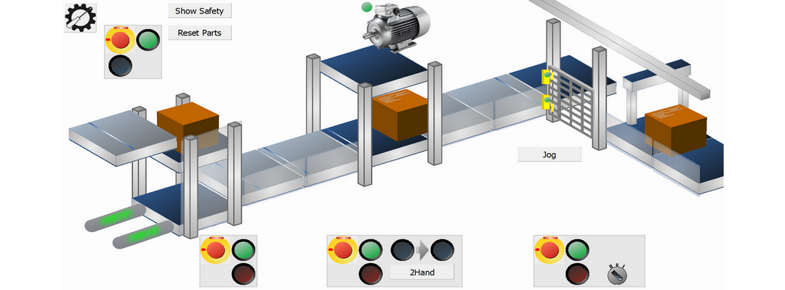

Cam410 este o serie de programe ce pot fi utilizate pentru simularea (inlocuirea) benzii transportoare utilizate la cursurile Sitrain (Step7 si TIA) ...
Cam410 este un mic simulator pentru banda transportoare utilizata la cursurile Siemens SITRAIN.
Cam410 poate fi conectat la un PLC real Step7 300 sau Step7 1500 PLC utilizand o conexiune TCP/IP, Profibus sau MPI.
Simulatorul este controlat de catre iesirile PLC, banda transportoare poate fi deplasata in ambele directii impreuna cu eventualele piese aflate pe banda.
Apasarea (click stanga cu mouse) oricarui buton de pe instalatia simulata seteaza intrarea corespunzatoare din PLC-ul conectat.
Ajutor:
Setari: Apasati butonul Setari si selectati un model pentru intrari: template pentru cursuri TIA sau ST (Step7 Classic).
Setati si adresele pentru Intrari si Iesiri standului real de curs.
Setati adresa TCP/IP a PLC si numerele de Rack si Slot a pozitiei CPU pe stand: valori uzuale sunt Rack0 Slot0 pentru S7-1500 si Rack0 Slot2 pentru S7-300.
Selectie scena: Selectati o vedere pentru simulare din lista:
Scena3: o simulare 3D a benzii transportoare.

Scena2: o simulare 2.5D a benzii transportoare.

Scena1: o simulare 2D a benzii transportoare.

Versiuni:
- v230629 [29.06.2023] Cam410D: Corectie erori minore. Mici modificari ale simulatorului 3D.
- v230124 [24.01.2023] Cam410D: 'Fork' a Cam410C bazat pe Cam410C v230124. Prima versiune cu simulare 3D.
- v230124 [24.01.2023] Cam410C: Grafica imbunatatita.
- v221025 [25.10.2022] Cam410C: Corectare erori (eroare la activare template, etc.)
- v220321 [21.03.2022] Cam410C: Mici imbunatatiri la interfata.
- v220117 [17.01.2022] Cam410C: Grafica si functionalitate imbunatatite referitor la viteza de simulare.
- v210524 [24.05.2021] Cam410C: Fereastra scalabila.
- v210511 [11.05.2021] Cam410C: Teste pentru scalare fereastra.
- v210509 [09.05.2021] Cam410C: Test pentru o versiune comuna atat pentru standurile de TIA Portal cat si pentru cele cu S7-300.
- v210407 [07.04.2021] Cam410C [Classic] [pt. S7-300]: 'Fork' a Cam410. Adaptat pentru cursurile S7-300.
- v210301 [01.03.2021] Cam410: 'Checkbox' pentru comutare rapida a adreselor intre S7-1500 si ET200SP. Ultima versiune Cam410. Inlocuit de Cam410C de la Cam410C v210509
- v210123 [23.01.2021] Cam410D: Teste initiale o simulare 3D bazata pe OpenGL. Versiune de test, ne-functionala.
- v201204 [04.12.2020] Cam410 [zip201215]: Simulare control PID. Corecturi referitoare la fonturi, scalabilitate (cateva dimensiuni fixe).
- v201112 [12.11.2020] Cam410 [zip201201]: Modificare scalare intrari analogice...
- v201029 [29.10.2020] Monitrain [zip201106]: Adaugare cod control pentru conectivitate...
- v201017 [17.10.2020] Monitrain: Adaugare vedere 2.5D. Diverse imbunatatiri referitoare la grafica si functionalitate.
- v200514 [14.05.2020] Monitrain: Posibilitate de control a vitezei de animatie. Textele butoanelor sunt editabile.
- v200428 [28.04.2020] Monitrain: Prima versiune functionala. Vedere fixa 2D. Doar setari pentru stand curs TIA Portal.
Proiectul utilizeaza Snap7 sub licenta LGPL3 pentru comunicatia cu echipamentul Sinumerik/Sinamics/Step7.
Proiectul utilizeaza Qt sub licenta LGPL3.
Proiectul poate utiliza interfata S7ONLINE daca biblioteca DLL este copiata in directorul executabilului si licenta pentru aceasta este activata.
Cod pe GitHub...
Cam410 download ...

Cam410s este un mic simulator a instalatiei utilizate la cursurile (cu acces remote/online) TIA Safety ...
Versiuni:
- v230124 [24.01.2023] Grafica imbunatatita.
- v221017 [17.10.2022] Fereastra scalabila. Imbunatatiri functionale. Corectare erori.
- v220222 [22.02.2022] Versiune noua pentru standul de scolarizare TIA Portal Safety v16/17. Diverse imbunatatiri functionale. Corectare erori.
- v210119 [19.01.2021] Corectare erori.
- v201204 [04.12.2020] [zip201218] Teste initiale. 2.5D cu dimensiune fixa. Setat pentru standul TIA Portal Safety v15.
Cam410hlp: este o aplicatie C# utilzata pentru controlul intrarilor "Safety Inputs" ale unui PLC simulat.
Intrarile de tip Safety sunt protejate in PLC si valorile lor nu pot fi scrise din aplicatii externe conectate la PLC.
Simulatoarele PLC precum PLCSIM Advanced pastreaza acest comportament astfel incat Intrarile de tip Safety raman protejate.
Din acest motiv, chiar si atunci cand sunt utilizate simulatoarele S7-PLCSIM sau S7-PLCSIM Advanced, Cam410s poate citi atat iesirile PLC "standard" si "safety",
poate scrie intrarile PLC "standard" dar nu poate scrie valori pentru intrarile PLC "safety".
Cam410hlp foloseste interfata API a PLCSIM Advanced pentru a ajuta aplicatia Cam410s sa controleze starea intrarilor "safety" pentru un PLC simulat.
Ajutor:
Programul se conecteaza automat la prima instanta deschisa in PLCSim Advanced
- Daca PLCSim Advanced nu este instalat programul nu ruleaza (sau 'crapa', nu stiu).
- Daca nu este activa nici o instanta programul asteapta initializarea unei instante.
- Daca sunt mai multe instante active, se conecteaza la prima dintre ele (instanta 0).
- Daca instanta 0 este inchisa se conecteaza automat la urmatoarea instanta, daca exista.
Programul citeste din fisierul cam410hlp.ini perechi de adrese:
- I_[n]=
- O_[n]=
Adresele pot fi absolute (cu % ca prim caracter) sau de tip "Tag PLC" (fara % ca prim caracter).
Adresele absolute pot fi doar I, M, Q si doar Bool sau Byte.
Exemple pt. Bool: %I0.0, %M2.7, %Q12.3
Exemple pt. Byte: %MB10, %IB12, %QB20
Adresele simbolice, de tip "Tag PLC", trebuie sa existe in tabelele de Tag-uri din PLC, programul verifica lista la conectare.
Dupa conectarea la instanta PLCSim Advanced, valoarea parametrului I_[n] este transferata in O_[n], daca e posibil.
Sunt transferate valori doar intre parametri de acelasi tip sau compatibili:
- I_[n]=%M20.0
- O_[n]=%I4.0
Valoarea M20.0 este transferata automat in I4.0
Versions:
- v220330 [30.03.2022] Corectat 'bug' "crash on downloading PLC program".
- v210104 [04.01.2021] Prima versiune functionala.
Cod pe GitHub...
Cam410s download ...
Cam410hlp download ...